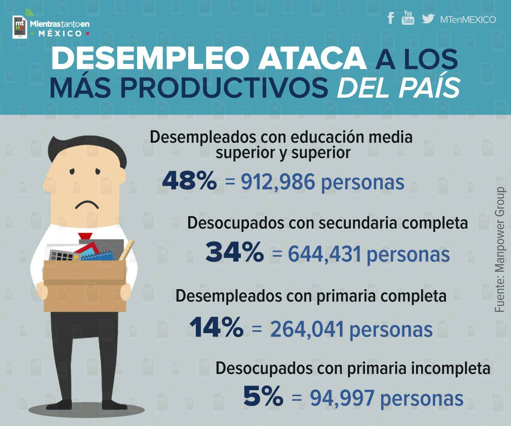
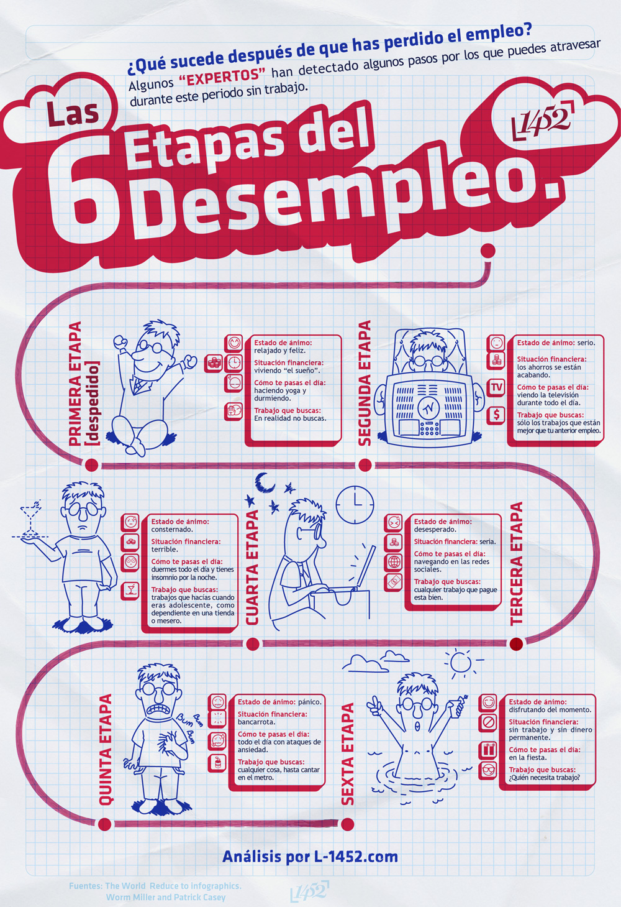

El desempleo, la falta de empleo.Trata de un desajuste en el mercado laboral,
donde la oferta de trabajo (por parte de los trabajadores), es superior a la
demanda de trabajo (por parte de las empresas).

Cuando una persona ofrece su propio trabajo a las empresas, que pasa la demanda de los puestos
disponibles de trabajo, se produce una situación de desempleo.
Por lo tanto, cuando gente sin empleo se conoce
como desempleo, es una persona desempleada.
